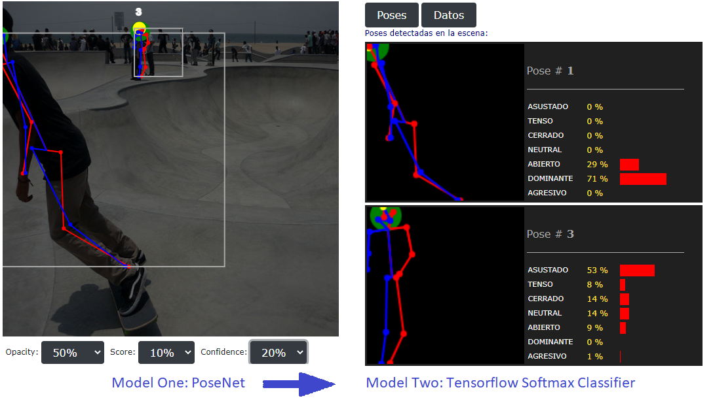

Reading the body language of the postures extracted from an image
Objetive
This is a proof of concept about how to use AI for reading the body language from postures. It is intended to be applied in the field of security and video survillance. Having a body language detection tool can help in the operation of a security monitoring
center. It can detect highly risky situacions with severe consecuences in the security of people and goods. Such situations may not be easily detected just by human operators without a strong expertise in the field. So, this kind of
tools can assist the operators on what camera have to put their attention to, at any time.
Description
In concrete, it is a JS library that extracts human postures from an image and scores them into 7 classes according to some body language signals and mental states (open, close, dominant, aggresive, fearful, etc.). There are 2 models involved and some
extra code to connect both models, as well as normalizing and scaling the data, but also to render the skeletons in scaled dimensions and the presentation of the results in bar charts.

*
Model One is the PoseNet Tensorflow model, which is used to extract 17 joints from each pose.
*
Model Two is a pre-trained Keras Softmax custom classifier, which scores the data from the 17 joints and classifies them among the 7 classes of the emotional state revealed by the posture.
The dataset used is just made with 184 images of people obtained from the internet.
The input image files used here are taken from the PoseNet model demo, and 1 synthetic image was generated with DAZ 3D Studio.
Installation
This is a simple web proyect. Just clone this repo and upload it into a web server, either a localhost or a hosting one.
$ git clone https://github.com/ensocoding/pose-demo
The tensor flow libraries, as well as the PoseNet model and the custom-made classifier, are all included here, because better peformance is achived this way. It also avoid installation issues. Just download and run it. This demo
can even run if the local web server is not connected to the internet.
Disclaimer
This software is not intented to run in a live production environment. It's just a demo to conceptually show how to implement a basic system that be capable to read an image and return the body language classification for each posture, as a result. The
classifier has been trained with a limited dataset, so there is plenty of room for improvements in terms of accuracy, performance, system design and features.
Acknowledgements
PoseNet is a Tensorflow js library from Google Inc. LLC.
Keras is a Tensorflow library from Google Inc. LLC.
The synthetic image was generated with the DAZ 3D Studio software.
Licence
GNU General Public License v2.0